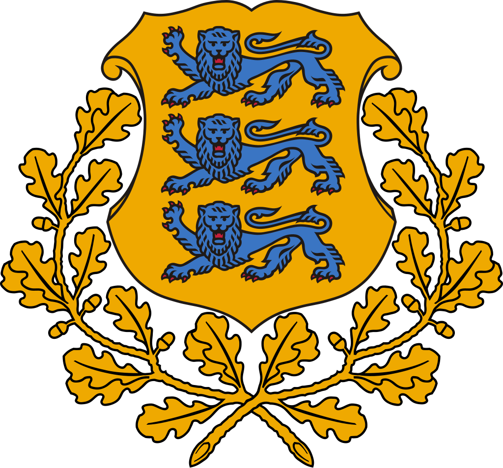
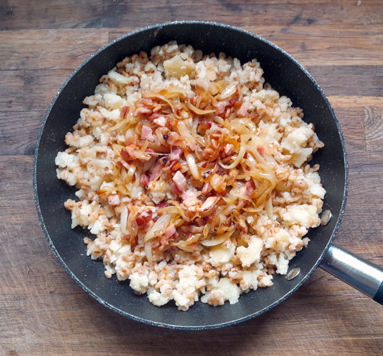

Estonia
Mulgipuder


A hearty porridge from Estonia that uses barley and potatoes; it can be eaten as a side dish or as the main course. It's also versatile since you can make it vegan or meat-based!
Ingredients
- Pearl Barley: 200 g
- Maris Piper Potatoes: 1 kg
- Water: 1 liter
- Large Onions: 2
- Vegetable Oil: 4 tablespoons
- (Optional) Large Onion, chopped: 1
- (Optional) Cooking Bacon, finely chopped: 100 g
- (Optional) Aubergines, peeled and diced: 2
- (Optional) Red AND/OR Yellow Peppers, seeded and chopped: 2-3
- (Optional) Mushrooms, sliced: 250 g
Bacon Substitutions
Steps
- Put the barley into a dry pan and stir over medium heat until browned and toasted (5-10 minutes).
- Peel the potatoes and cut them into 3-4 pieces (roast potato size). You want them to be cooked through by the time the barley is done.
- Put the barley in the slow cooker, stir through the chopped onion if using, add the potatoes on top and pour in the water. The water will now cover the potatoes and this is fine – they are going to steam while the barley cooks.
- Set the slow cooker on low and cook for 4 hours.
- If the potatoes are cooked, lift them out with a strainer and allow them to steam dry in a pan on the hob.
- Taste the barley to see if it is cooked to your taste – a little al dente makes a nice contrast with the soft potato. If there is excess liquid left, turn the heat to High and continue to cook with the lid off until it has evaporated, stirring occasionally. Make sure the barley doesn’t stick or burn.
- Mash the potatoes, stir through the barley and season with salt and pepper. Keep warm.
- Slice the onions and cook in the oil until softened and starting to caramelise.
- Add the bacon (or any of the substitutions) and continue cooking until the bacon is starting to brown at the edges. Taste and season with salt and pepper – although if you’re using bacon, it might already be salty enough.
- Spoon some of the potato/barley mixture into a warmed bowl and make a well in the middle. Add your toppings and a spoonful of the oil they were cooked in, and serve.
Source: Mulgipuder